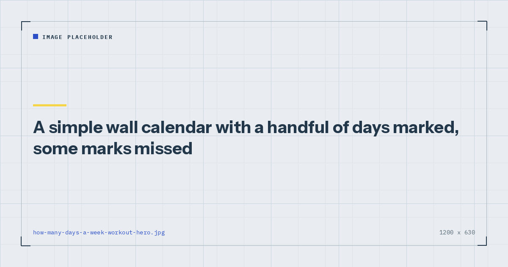

Quick Workouts & Plans
How Many Days a Week Should You Work Out at Home?
The honest answer is between two and five, and which end you land on depends less on what is optimal than on what you will still be doing in March.

This question gets answered badly in both directions. One camp says twice a week is plenty; the other implies that anything under five is not serious. Both are describing different people with different goals and pretending it is a universal rule.
Here is what the evidence actually supports, and how to translate it into a number for your week.
The minimum that does something
Adult activity guidance from the World Health Organization asks for muscle-strengthening activity involving all major muscle groups on two or more days a week, alongside 150–300 minutes of moderate or 75–150 minutes of vigorous aerobic activity.1 The NHS gives the same strength recommendation.2
Two days is therefore a real floor rather than a token one. It is the point at which you have met the recognised recommendation, and it is a substantially better position than one day or none. If two is what your life allows, two is a legitimate answer and not a compromise you should feel apologetic about.
What two days requires is that both sessions are full-body. Two split sessions a week leaves half of you trained once a fortnight, which is where the plan quietly stops working — the reasoning is in full body vs split routines.
What the evidence says about frequency
The most useful finding is also the least dramatic. A meta-analysis of resistance training frequency found that when weekly volume is held equal, training a muscle group more often produces similar or slightly better hypertrophy than concentrating the same work into fewer sessions.3
Read that carefully, because it is routinely misquoted. It does not say that training more days is better. It says that if you are going to do twelve sets of leg work this week, splitting them across two or three days is mildly better than doing all twelve at once. The weekly total is the thing that matters; frequency is how you package it.
The complementary finding is that weekly volume itself has a dose-response relationship with muscle growth — more hard sets per week produce more growth, up to a point.4 So more days does help, but indirectly: it helps because more days usually means more total sets, not because the calendar itself is doing anything.
The practical implication is worth stating plainly. If you add a fourth session that consists of the same total work redistributed, expect a small benefit. If you add a fourth session of genuinely additional hard sets, expect a larger one — until you hit the ceiling.
Frequency is not a magic variable. It is a way of packaging weekly volume so that more of it can be done well.
Where more days stops helping
There is a ceiling, and it arrives sooner for home training than for gym training. Three reasons.
Recovery is finite. Muscle adapts between sessions, not during them. Past a certain weekly volume, additional sets add fatigue that degrades the quality of subsequent sessions rather than adding stimulus. Most evidence puts the point of clearly diminishing returns somewhere around twenty hard sets per muscle group per week for trained individuals, and considerably lower for beginners.
Bodyweight training is more fatiguing per unit of stimulus. Because you cannot add load, hard sets have to be taken closer to failure, and sets near failure cost more recovery. Six days a week of near-failure bodyweight training is difficult to sustain in a way that six days of submaximal barbell work is not.
The adherence cost rises sharply. This is the one that actually determines outcomes. A five-day plan requires five separate decisions a week to go right. A three-day plan requires three. Every additional required day is another point at which a bad evening removes a session, and the psychological cost of a missed session is larger than the physical one — the mechanism described in beating the six-week drop-off.
Choosing your number
The useful question is not “what is optimal?” but “what is the highest number I will still be hitting in three months?” Then subtract one.
That last instruction is deliberate. Almost everyone overestimates their available training days when planning, because planning happens in an optimistic mood and training happens in a tired one. A three-day plan completed three times a week produces more than a five-day plan completed twice.
| Days | Structure | Realistic expectation |
|---|---|---|
| 2 | Full body | Meets guidelines; steady beginner progress |
| 3 | Full body | The best ratio of results to commitment |
| 4 | Upper / lower | Noticeably faster progress; needs real scheduling |
| 5–6 | Push / pull / legs | Diminishing returns; high adherence cost |
For most people reading this — training at home, around a job, with no gym — three is the answer. It is enough frequency to hit everything two or three times a week, it leaves four days of slack, and it is the basis of the three-day home workout split.
What the rest days are for
Not nothing, but not training either. Rest days are when adaptation actually happens: the session provides the signal, the recovery period produces the change.
Walking on rest days is close to free from a recovery standpoint and contributes to the aerobic half of the activity guidelines, which strength training does not cover. Light mobility work is fine. What defeats the purpose is doing a hard conditioning session on a nominal rest day and then wondering why the next strength session feels flat.
Sleep does more for recovery than anything you can actively do, and its effects on training performance are reasonably well documented.5 If you are choosing between adding a fourth session and getting an extra hour of sleep on three nights, the sleep is very likely the better investment.
Changing the number later
Change it upward only after you have completed your current number consistently for at least six weeks. The temptation is to add a day when motivation is high, which is exactly when your judgement about your future availability is worst.
Change it downward without ceremony when life changes. Dropping from four days to three during a difficult period is a plan adjustment, not a failure, and it preserves the habit that would otherwise break entirely. Two sessions a week maintains most of what you have built, which makes it a genuinely useful floor to fall back to rather than stopping.
Where to go next
Once you have a number, the weekly home workout schedule turns it into an actual week. If your number is three, the three-day split is the plan.
Frequently asked questions
How many days a week should I work out at home?
Three is the best answer for most people training at home around a job. It provides enough frequency to train every muscle group two or three times a week while leaving four days of slack for life to interfere.
Is working out 2 days a week enough?
Yes, in the sense that it meets the recognised adult recommendation for muscle-strengthening activity on two or more days a week. Both sessions need to be full-body for that to hold. Progress will be slower than at three or four days but it is genuine progress.
Is working out 6 days a week too much?
For home bodyweight training, usually yes. Because you cannot add load, sets have to be taken closer to failure, which costs more recovery. The bigger problem is adherence: six days requires six separate decisions a week to go right.
Should I work out every day?
Not with hard resistance training. Muscle adapts between sessions rather than during them, so training every day leaves no room for the adaptation you are training for. Daily light movement such as walking is a different matter and is fine.
Does training frequency matter more than total volume?
No. Weekly volume is the primary driver, and frequency is mainly a way of distributing that volume so more of it is performed while relatively fresh. When weekly volume is equal, higher frequency shows a small advantage rather than a decisive one.
What should I do on rest days?
Walking and light mobility work. Both aid recovery rather than compete with it, and walking covers the aerobic half of the activity guidelines that strength training does not. Avoid hard conditioning sessions on nominal rest days.
Sources and further reading
- World Health Organization. WHO Guidelines on Physical Activity and Sedentary Behaviour. 2020.
- NHS. Physical activity guidelines for adults aged 19 to 64.
- Schoenfeld BJ, Ogborn D, Krieger JW. “Effects of Resistance Training Frequency on Measures of Muscle Hypertrophy: A Systematic Review and Meta-Analysis.” Sports Medicine, 2016;46(11):1689–1697. PubMed.
- Schoenfeld BJ, Ogborn D, Krieger JW. “Dose-response relationship between weekly resistance training volume and increases in muscle mass: A systematic review and meta-analysis.” Journal of Sports Sciences, 2017;35(11):1073–1082. PubMed.
- Bonnar D, Bartel K, Kakoschke N, Lang C. “Sleep Interventions Designed to Improve Athletic Performance and Recovery: A Systematic Review of Current Approaches.” Sports Medicine, 2018;48(3):683–703. PubMed.
Comments
Comments are not enabled yet. Add a hosted comment embed (Disqus, Commento, Giscus) inside this container when you are ready.